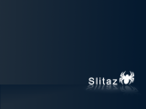
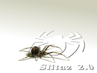
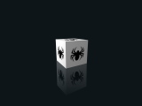
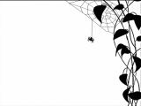

Artwork
Art & Design
Was wäre eine Linux-Distributions-Seite ohne eine Artwork-Sektion? Jeder - auch wir - will
Screenshots sehen, bevor er Anwendungen herunterlädt.
Deswegen möchten auch wir Screenshots des Slitaz-Desktops
zeigen. Desweiteren findet ihr hier noch SliTaz-Hintergrundbilder, Logos und CD-Labels.
Falls Ihr uns weitere Slitaz-bezogene Wallpaper oder Kunstwerke zur Verfügung stellen wollt,
nehmen wir das gerne an.
Falls das Hintergrundbild für die Live-CD verwendet werden soll, nehmt bitte zur Kenntnis,
dass einerseits zwei Formate benötigt werden (1280x1024 und 1024x768) und andererseits
ein Größe von 200 kB nicht überschritten werden sollte. PNG-Dateien sind bevorzugt.
Meldet euch bitte über das Forum oder die
Mailing List.
Alle Bilder unterstehen der GNU General Public License.
Screenshots
Die Screenshots besitzen eine eigene Seite: Screenshots
Erstellt wurden Sie mit Gimp oder mtPaint. Eigene Screenshots werden auch gerne im
Forum gezeigt.
Hintergrundbilder
Speichern mit Rechtsklick und "Ziel speichern unter". Transparente Bilder ermöglichen durch die Wahl einer zusätzlichen Hintergrundfarbe eine farbliche Anpassung des Bildes. Im Gegensatz zu Openbox ermöglicht JWM diese Funktion leider nicht, da JWM nur ein Hintergrund unterstützt.
|
 1024x768 - transparent jpg/png; 145 kB; GIMP |
1024x768 1280x1024 jpg; 162/288 kB; GIMP |
1024x768 jpg; 128 kB; GIMP/Fyre |
|
 1280x1024 jpg; 166 kB; GIMP |
 1024x768 - transparent jpg/png; 32/73 kB; GIMP |
 1280x1024 jpg; 137 kB; Inkscape |
 1024x768 png; 60 kB; |
 1024x768 - 1280x1024 png; 124/156 kB; mtPaint |
1024x768 - 1280x1024 png; 33/36 kB; Inkscape |
Logos & Icons
Sie können die Logos zum Gestalten eines neuen Hintergrundbildes, oder auf ihrer Website verwenden, um das SliTaz-Projekt populärer zu machen.


CD Labels
Vorlagen zum Bedrucken der CDs und CD-Hüllen. Zum Öffnen und Speichern bitte
auf das Bild/ Link klicken.
Stable
|
PNG-Format 218 kB 1024x1024 Zugehörige CD-Hülle Vorderseite und Inlay PNG-Format 127 kB 596x943 |

|
|
PNG-Format 559 kB 1024x1024 |

|
Cooking
|
PNG-Format 297 kB 1000x1000 zugehörige CD-Hülle Vorderseite und Inlay PNG-Format 235 kB 596x943 |

|
SliTaz Farben (HTML Code)
Das sind die auf der SliTaz-Website und in SliTaz selbst verwendeten Farben im HTML-Code.
- Beige :
d4d191undbfb06b - Rot :
6c0023und522222 - Grau :
242424und222222 - Orange :
df8f06 - Gelb :
f0ba08

{kind=link}
{kind=link}
{kind=link}
{kind=link}
{kind=link}
{kind=link}
{kind=link}
{kind=link}
{kind=link}
{kind=link}
{kind=link}
{kind=link}
{kind=link}
{kind=link}
{kind=link}
{kind=link}
{kind=link}
{kind=link}